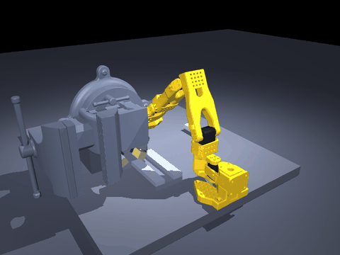
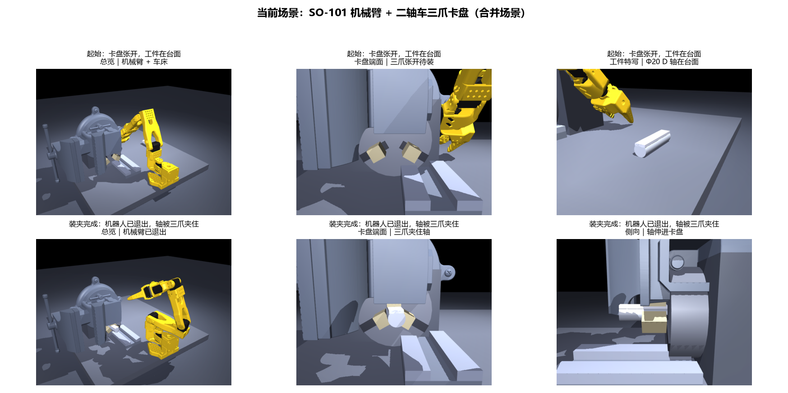
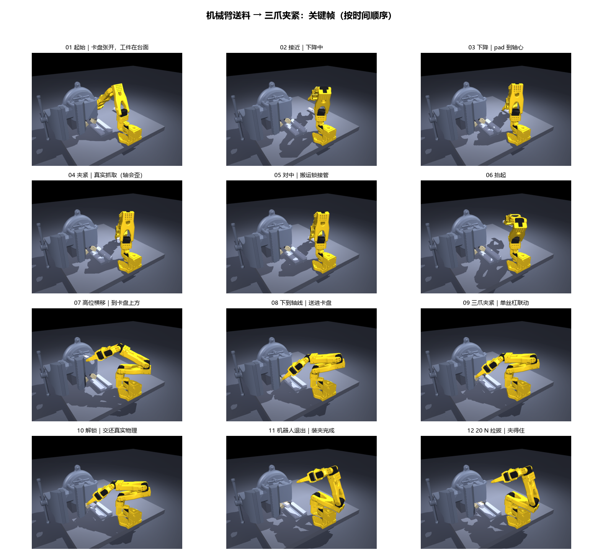

SO-101 机械臂抓 Φ20 D 轴 → 送进二轴车三爪卡盘 → 夹紧 → 退出 · 生成于 2026-11-05 21:06 · 96 帧动图 / 12 个关键帧
PASS
从卡盘张开、机械臂接近抓取，到横移送入、三爪夹紧、机器人退出、20 N 拉拔。 画面来自当次仿真逐帧离屏渲染，没有后期摆拍。

上排是起始状态（总览 / 卡盘端面三爪张开 / 台面上的 D 轴）， 下排是装夹完成状态（总览 / 卡盘端面三爪夹住轴 / 侧视轴伸进卡盘）。 三爪按 120° 分布，长边朝径向，由单丝杠 + 2 条关节联动约束驱动。

注意第 04 帧「真实抓取」里轴是歪的（约 41.5°），第 05 帧起搬运段接管为运动学锁； 第 10 帧解锁，之后所有载荷测试都在真实物理下进行。
physics_after_clamp=1 由 verify_all.py 强制断言，防止把锁延长到拉拔阶段造假。最省事：双击桌面上的「机器人仿真 3D 窗口」，会弹出一个和 SolidWorks 一样的可交互 3D 窗口。 按住鼠标左键转视角、滚轮缩放，右侧面板能开接触点 / 力 / 坐标系显示。
也可以在 D:\codex\projects\robot-sim-first-step 里粘下面任意一条：
D:\robot-env\Scripts\python.exe show_live.py :: 起始态，可拖着转 D:\robot-env\Scripts\python.exe show_live.py --feed :: 实时播放送料全过程 D:\robot-env\Scripts\python.exe show_live.py --clamped :: 直接看装夹完成态 D:\robot-env\Scripts\python.exe show_current.py :: 重新生成本页的图 / 动图 D:\robot-env\Scripts\python.exe verify_all.py :: 复跑 7/7 回归